Линейный регулируемый блок питания с постоянным выходным напряжением +1.25 ... +19 В и выходным током до 5 А
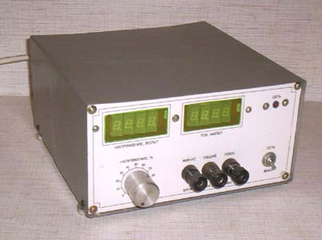
Назначение
Линейный регулируемый блок питания с выходным постоянным напряжением в диапазоне +1.25 ... +19 В при выходном токе до 5 А предназначен для проведения исследовательских работ с электромагнитными и магнитоэлектрическими приводами [2, 3] и клапанами, малогабаритными электромагнитами [4], для зарядки аккумуляторов, а также при разработке электронных схем в качестве источника питания.
Технические данные:
Описание
Электрическая принципиальная схема блока питания показана на рис. 1. Прибор подключается к питающей сети напряжением 220 В частотой 50 Гц с помощью сетевой вилки с заземлением (XP1 "220 В 50 ГЦ"). Для дополнительного заземления корпуса прибора помимо контакта сетевой вилки служит клемма XP2 "ЗАЗЕМЛЕНИЕ", расположенная на задней панели. Первичная обмотка силового трансформатора T1 запитывается от сети переменного тока через предохранитель FU1 "2 А" и тумблер S1 "СЕТЬ-ВЫКЛ". Со вторичных обмоток трансформатора T1 необходимые напряжения поступают на линейный стабилизатор напряжения, схема которого приведена на рис. 2. Светодиодный индикатор "СЕТЬ" (рис. 6, 7) служит для обозначения рабочего состояния блока питания. Регулировка поступающего на клеммы XS1 передней панели выходного напряжения стабилизатора осуществляется с помощью многооборотного переменного резистора R1 "НАПРЯЖЕНИЕ, %". Для контроля величины выходного напряжения и тока служат цифровой вольтметр "НАПРЯЖЕНИЕ, ВОЛЬТ" и цифровой амперметр "ТОК, АМПЕР", собранные по идентичным схемам (рис. 4, 5). Полярность выходного напряжения блока питания относительно корпуса может быть выбрана с помощью перемычки между клеммой "ОБЩИЙ" и одной из клемм "МИНУС" или "ПЛЮС" разъема XS1. При отсутствии такой перемычки гальваническая связь выхода блока питания с корпусом отсутствует.
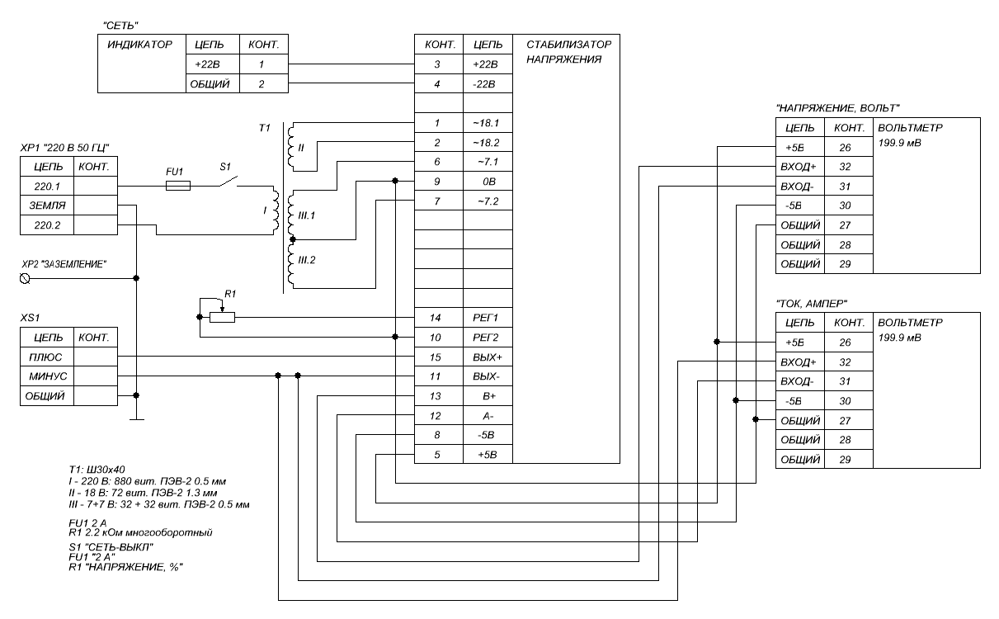
Рис. 1. Схема электрическая принципиальная блока питания.
Стабилизатор напряжения, схема которого показана на рис. 2, построен на интегральном регулируемом линейном стабилизаторе DA1 (LT1083), обеспечивающим необходимый диапазон регулировок по выходному напряжению и защиту по выходному току при превышении рассеиваемой мощности или рабочей температуры. Переменное напряжение со вторичной обмотки II силового трансформатора T1 (рис. 1) поступает на диодный выпрямитель VD1-VD4 с фильтром C1-C4. Выпрямленное и отфильтрованное напряжение подается на вход микросхемы стабилизатора DA3. Диапазон выходного напряжения определяется соотношением сопротивлений подключенного к регулирующему выводу микросхемы DA3 делителю (R1 - рис. 1 и R1 - рис. 2). Диоды VD9, VD10, VD11 выполняют функцию защиты от обратного напряжения. Резистор R2 служит нагрузкой при нулевом токе потребления. Для измерения выходного тока используется низкоомный резистор R6, выполняющий роль шунта, параллельно которому подключена цепочка R3R4R5 для калибровки амперметра. Цепочка R7R8R9, подключенная к выходу стабилизатора, служит для калибровки вольтметра. Двухполярный стабилизатор напряжения на микросхемах DA1 (7805) и DA2 (7905) обеспечивает вспомогательные напряжения питания +5 В амперметра и вольтметра. Входные напряжения для этого стабилизатора снимаются с диодного моста VD5-VD8 с конденсаторным фильтром C5C6. Переменное напряжение на диодный мост VD5-VD8 поступает со вторичной обмотки III.1-III.2 силового трансформатора T1 (рис. 1). Эскиз печатной платы стабилизатора напряжения изображен на рис. 3. Микросхема линейного стабилизатора DA1 размещена на дюралюминиевом теплоотводе, который крепится к печатной плате с помощью стоек.
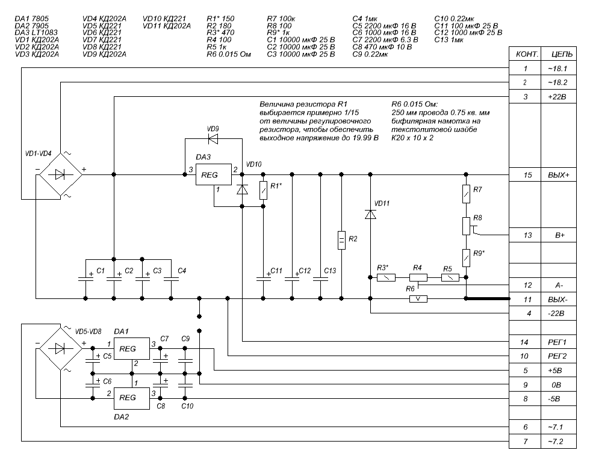
Рис. 2. Схема электрическая принципиальная стабилизатора напряжения.
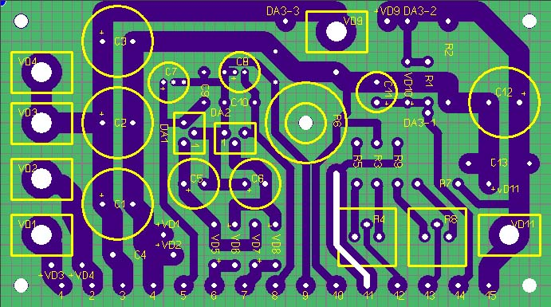
Рис. 3. Печатная плата стабилизатора напряжения.
Цифровой амперметр и вольтметр собраны по одинаковым схемам (рис. 4) цифрового вольтметра на диапазон 0 ... +199.9 мВ [1] на микросхеме аналогово-цифрового преобразователя (АЦП) DA2 (ICL7107) с семисегментными светодиодными индикаторами HL1-HL4. В качестве источника опорного напряжения АЦП используется микросхема параллельного стабилизатора DA1 (TL431A) с токоограничивающим резистором R1 и делителем напряжения R2R3. Измеряемое напряжение поступает на вход АЦП через фильтр нижних частот R4C11. Элементы R5C7, R6C8C9, C10 служат для задания режима работы АЦП. Резистор R7 служит для питания элемента десятичного разделителя (запятой). Каждый цифровой вольтметр собран на двух печатных платах - АЦП и семисегментного светодиодного индикатора, которые соединяются между собой гибким кабелем.
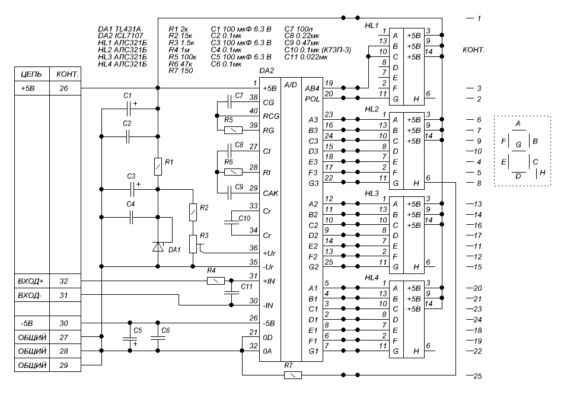
Рис. 4. Схема электрическая принципиальная цифрового вольтметра на диапазон 0 ... +199.9 мВ.
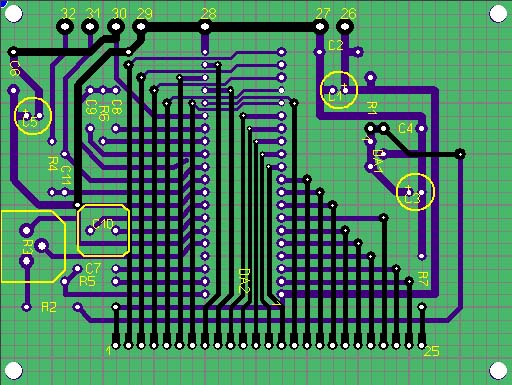
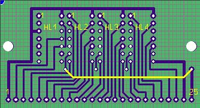
Рис. 5. Печатные платы АЦП и светодиодного индикатора цифрового вольтметра на диапазон 0 ... +199.9 В.
Для индикации включенного состояния блока питания служит индикатор, собранный по схеме, показанной на рис. 6, на светодиоде HL1 (АЛ307, АЛ310) и токоограничивающем резисторе R1, размещенных на одной печатной плате (рис. 7).
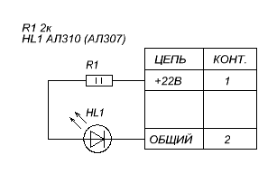
Рис. 6. Схема электрическая принципиальная индикатора блока питания.
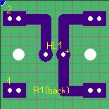
Рис. 7. Печатная плата индикатора источника питания.
Источник питания смонтирован в металлическом корпусе, который состоит из основания и прикрепленных к нему двух панелей - передней и задней, соединенных распорками. Сверху корпус закрывается П-образным кожухом. Большинство деталей и узлов установлено на основании или передней панели. Устройства подключения, управления и индикации выведены на переднюю и заднюю панель (рис. 8, 9). Вид на внутренний монтаж показан на рис. 10.
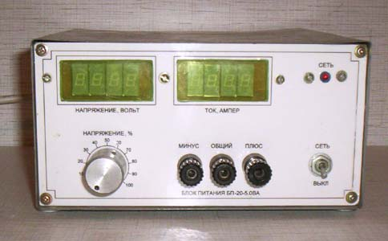
Рис. 8. Блок питания. Вид спереди.
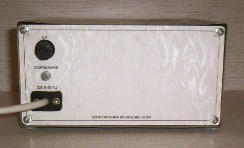
Рис. 9. Блок питания. Вид сзади.
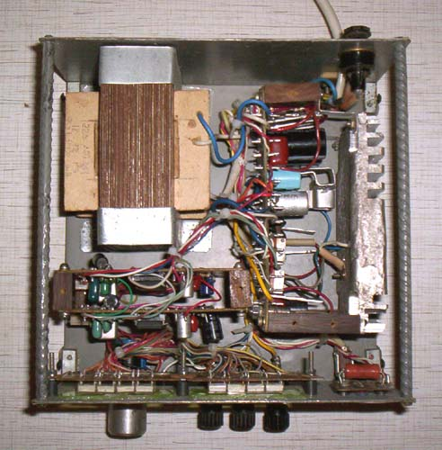
Рис. 10. Блок питания. Вид сверху со снятым кожухом.
Состояние разработки
Блок питания используется в лабораторных условиях для проведения различных экспериментов, при налаживании и ремонте электронных устройств, в технологических целях, при зарядке аккумуляторов, а также в опытах с малогабаритными электромагнитами и катушками индуктивности, когда требуется оперативное измерение напряжения и тока питания без подключения дополнительных приборов.
Ссылки:
01.09.2018
Альтернативные источники
энергии
Компьютеры и
Интернет
Магнитные поля
Механотронные системы
Перспективные
разработки
Электроника и технология